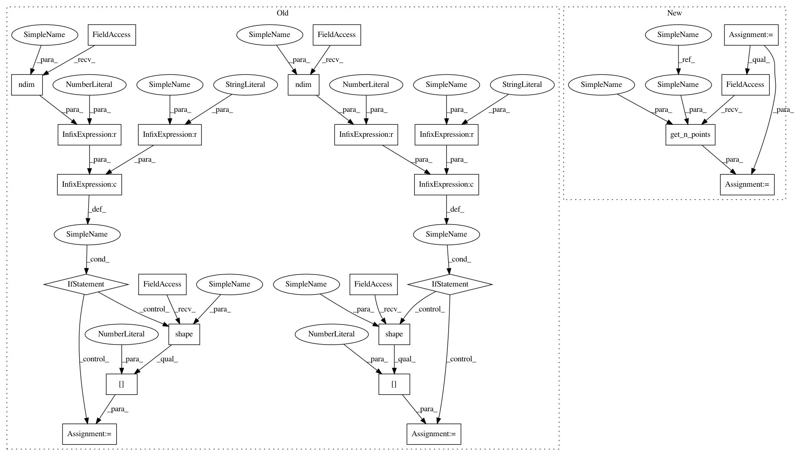

2b4d328be9d22522eca9a91d39eb4c13c3afafe3,geomstats/learning/frechet_mean.py,,variance,#Any#Any#Any#Any#Any#,19
Before Change
weights : array-like, shape=[n_samples, 1], optional
n_points = 1
if point_type == "vector" and gs.ndim(points) == 2:
n_points = gs.shape(points)[0]
if point_type == "matrix" and gs.ndim(points) == 3:
n_points = gs.shape(points)[0]
if weights is None:
weights = gs.ones((n_points,))
sum_weights = gs.sum(weights)
After Change
weights : array-like, shape=[n_samples, 1], optional
n_points = geomstats.vectorization.get_n_points(
points, point_type)
if weights is None:
weights = gs.ones((n_points,))
In pattern: SUPERPATTERN
Frequency: 3
Non-data size: 24
Instances
Project Name: geomstats/geomstats
Commit Name: 2b4d328be9d22522eca9a91d39eb4c13c3afafe3
Time: 2020-04-17
Author: ninamio78@gmail.com
File Name: geomstats/learning/frechet_mean.py
Class Name:
Method Name: variance
Project Name: geomstats/geomstats
Commit Name: 649a569555396206384c92a7e2a235f513bfc3be
Time: 2020-04-17
Author: ninamio78@gmail.com
File Name: geomstats/learning/frechet_mean.py
Class Name:
Method Name: variance
Project Name: geomstats/geomstats
Commit Name: 3ac09b538111f2a828ca6f136206abab29f09a68
Time: 2020-04-16
Author: ninamio78@gmail.com
File Name: geomstats/learning/frechet_mean.py
Class Name:
Method Name: variance
Project Name: geomstats/geomstats
Commit Name: 2b4d328be9d22522eca9a91d39eb4c13c3afafe3
Time: 2020-04-17
Author: ninamio78@gmail.com
File Name: geomstats/learning/frechet_mean.py
Class Name:
Method Name: variance